Håndlavet produkt

sorenfroststaalarray lamp shade
En rendering blev gennem mange iterationer til en færdig lampeskærm i egetræ, messing og 3D-printede dele.


Fra idé til produkt
Array begyndte som en Blender-rendering til RenderWeekly, hvor den blev featured og fik positiv respons. Siden blev formen afprøvet igen og igen, indtil den kunne bygges som et fysisk produkt.
Lampeskærmen samles af flere 3D-printede dele, håndslebne og malede overflader, messingstænger med håndskåret gevind og egetræ fra restproduktion. Lamellerne sidder med magneter og kan hurtigt tages af ved rengøring.
Array er en lampeskærm, ikke en komplet lampe. Fatning, ledning og lyskilde følger ikke med. Brug en CE-godkendt E27-fatning med udvendigt gevind/omløber, som er godkendt til lampeskærmens vægt, og en LED-lyskilde på maks. 11 W. Kontroller altid afstande og montering før brug.